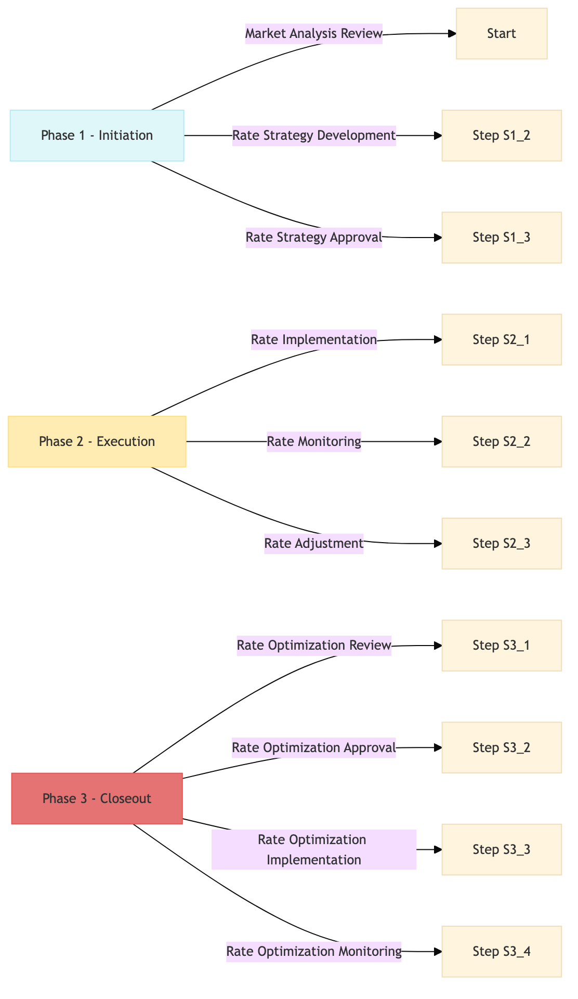

| Role | Steps |
|---|---|
| Revenue Manager | 1.1 1.2 2.1 2.2 2.3 3.1 3.2 3.3 3.4 |
| General Manager | 1.3 3.2 |
| Step | Name | Role | System | Input | Output | KPI | Dec? | Exc? | Pain Point / Risk |
|---|---|---|---|---|---|---|---|---|---|
| 1.1 | Market Analysis Review | Revenue Manager | IDeaS G3 RMS | Weekly market analysis report | Market trends and competitor pricing summary | Completion within 2 hours | N | Y | Inaccurate data leading to incorrect rate adjustments |
| 1.2 | Rate Strategy Development | Revenue Manager | Oracle OPERA Cloud | Market trends and competitor pricing summary | Proposed rate strategy document | Completion within 4 hours | N | Y | Overlooking peak demand periods |
| 1.3 | Rate Strategy Approval | General Manager | Oracle OPERA Cloud | Proposed rate strategy document | Approved rate strategy document | Approval within 24 hours | Y | N | Delays in decision-making affecting revenue opportunities |
| 2.1 | Rate Implementation | Revenue Manager | Oracle OPERA Cloud | Approved rate strategy document | Updated room rates in Oracle OPERA Cloud | Completion within 30 minutes | N | Y | Human error during manual rate entry |
| 2.2 | Rate Monitoring | Revenue Manager | Oracle OPERA Cloud | Updated room rates in Oracle OPERA Cloud | Daily rate performance report | Completion within 1 hour | Y | N | Lack of real-time data affecting quick adjustments |
| 2.3 | Rate Adjustment | Revenue Manager | Oracle OPERA Cloud | Daily rate performance report | Adjusted room rates in Oracle OPERA Cloud | Completion within 1 hour | N | Y | Over-reliance on historical data |
| 3.1 | Rate Optimization Review | Revenue Manager | Oracle OPERA Cloud | Adjusted room rates in Oracle OPERA Cloud | Optimized rate strategy document | Completion within 4 hours | N | Y | Neglecting guest feedback on pricing |
| 3.2 | Rate Optimization Approval | General Manager | Oracle OPERA Cloud | Optimized rate strategy document | Approved optimized rate strategy document | Approval within 24 hours | Y | N | Resistance to change in pricing strategies |
| 3.3 | Rate Optimization Implementation | Revenue Manager | Oracle OPERA Cloud | Approved optimized rate strategy document | Finalized room rates in Oracle OPERA Cloud | Completion within 30 minutes | N | Y | Technical issues with Oracle OPERA Cloud |
| 3.4 | Rate Optimization Monitoring | Revenue Manager | Oracle OPERA Cloud | Finalized room rates in Oracle OPERA Cloud | Weekly rate performance report | Completion within 1 hour | Y | N | Inconsistent data reporting |
A structured process document for rate strategy and pricing optimization at a Marriott full-service hotel using Oracle OPERA Cloud PMS.